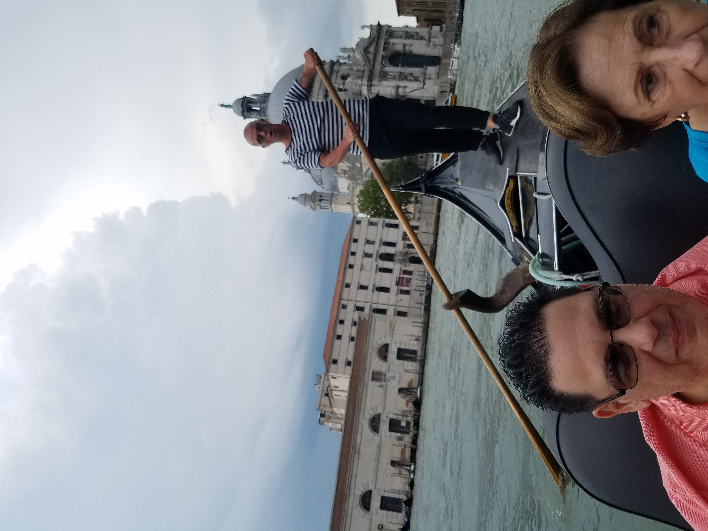
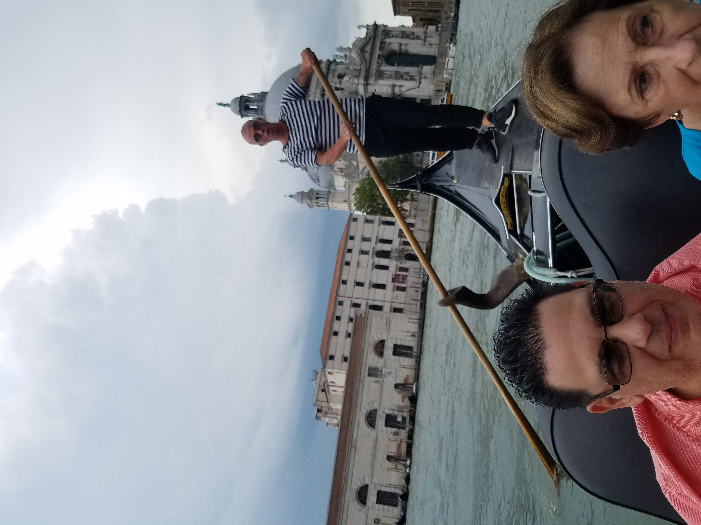
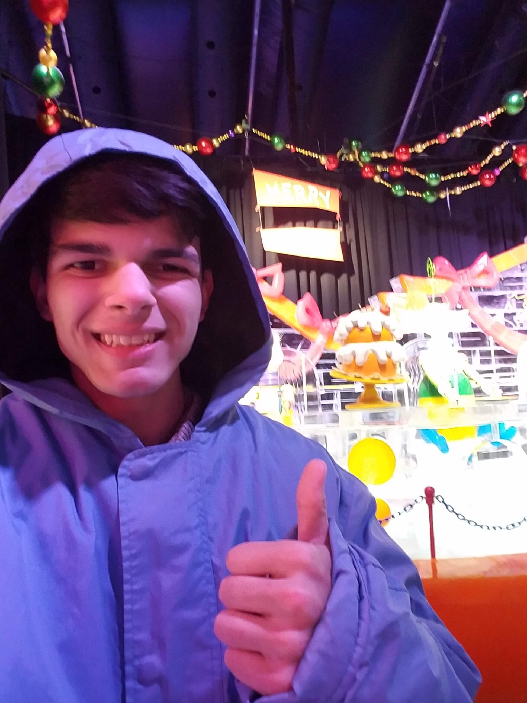
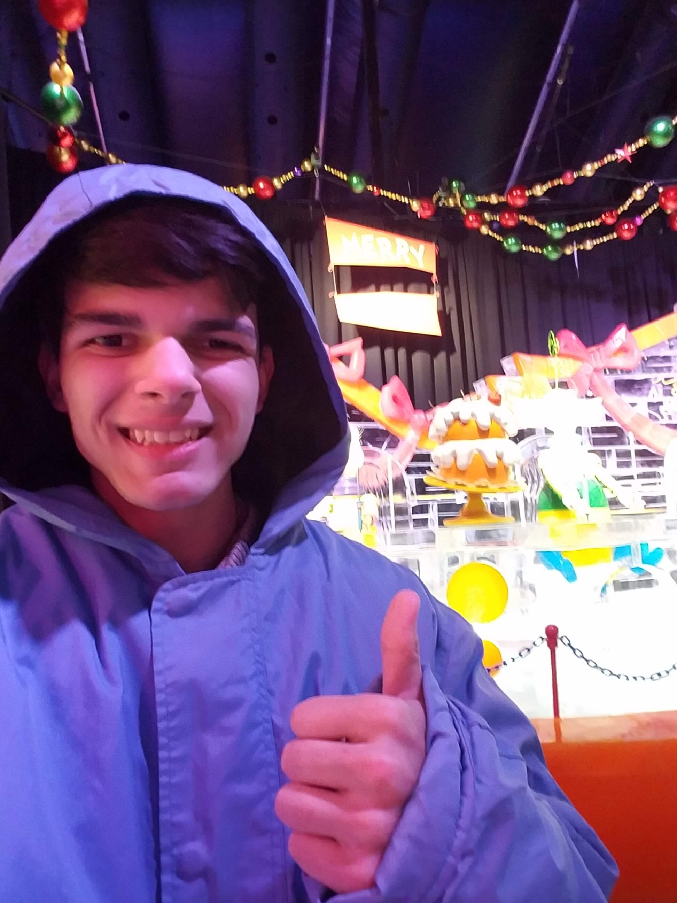

Everything Me

Back
Extracurriculars

I have been a member of Key Club every year I have been in High School. For my Freshman and Sophomore years I was a regular member of the club, however I attended almost every service event my club offered acculumating over 120 hours. Junior year my experience was mostly the same, but halfway through I ran for the New Jersey District board as Webmaster (after applying the year before). My girlfriend convinced me to join and now we both work as members of that board, managing every club in the state. As webmaster I have maintained the website (applying to this position inspired me to learn website design and HTML) and worked on committees as the Member Recognition Chair! Many people will say, "Key Club changed my life for the better" and I fit right in there, without Key Club I would not have done any community service nor would I have ever learned coding to the degree I do now, and therefore would not have persued computer science as I do now!

It might not be as glorified as football or baseball, however one of, if not my proudest, achievements is becoming the Varsity Captain for my school. I started playing the sport around 4th grade and ever since have considered it my most enjoyable hobby. When I started I did not even know it was possible to keep the ball out of the gutter but after spending countless hours practicing I improved to being one of the better bowlers in the state! I have participated in a lot of tournaments through and apart from my school's team; winning a couple of individual and team tournaments. In 2018 my family and I took a road trip to Dallas after I qualified for the National Junior Gold Tournament which was a huge learning experience (and a fun excuse to visit Texas). All of these experiences helped me get my Varsity letter Freshman year, and this season the captain of the team as the most experienced member. As captain I organized summer practices and managed the 15 players on our team when our coach was not present.

While the STEM academy might be to broad to consider an extracurricular, I spend a lot of time outside of school doing projects and working with teachers and other students because of it. The STEM Academy, in general has taught me a lot about leadership and learning how to do new things; Without it I would have never become interested in CAD modeling, or even programming as I learned it for a project we did. Outside of classes, STEM has provided me a lot of volunteer work and recently a paid job working with the tech department! I owe a lot to my program and am glad to be a part of it!

Ever since fourth grade I have been enrolled in a local gym practicing Muay Thai. While originally I hated the classes (I wasn't in the best shape), I started to enjoy exercising and have learned how to defend myself in the meantime. Over the past 8 years, I rigorously worked and in 2018 I became a black armband, which is hard to accomplish considering the amount of effort and determination you have to put it. Overall, taking these classes has put me in very good shape and has taught me persistance, mentally and physically.
My Freshman year, TSA was a new club started for the STEM students to compete in various competitions. The first competition I competed in was Video Game Design, and the challenge was to design and create a sport game. My group and I designed our around skiing and by all means, it was pretty bad, but that was my first time using Unity or coding in general so it was a perfect learning experience. The next year I joined Board Game Design where I helped to make "King of the Hill" a fantasy monopoly-like game. Sadly we did not place for that event either, however last year through the chaos with Quarantine I finally had some success! Originally I was making a second video game, named Tripartite (it was Olympic Themed and mostly completed), but we couldn't submit it because the convention got canceled so instead I jumped onto webmaster, one of the few competitions being offered still, and won 3rd place in the state! Designing the Faraday Motors website was one of my prouder accomplishments, especially because I created it (for the most part) within the 3 days before the deadline on top of schoolwork. While I was sad my video game could not be used, I was overjoyed that my website placed!
Back
My Timeline
Back
Gallery


 



 



Back